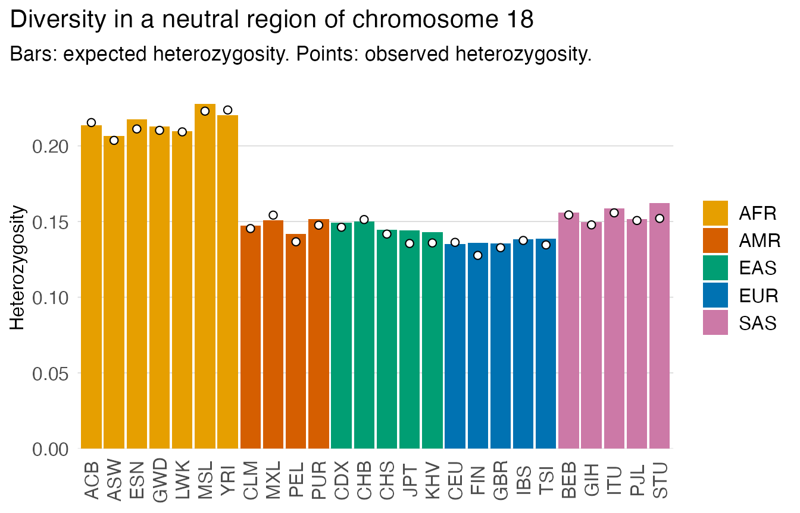
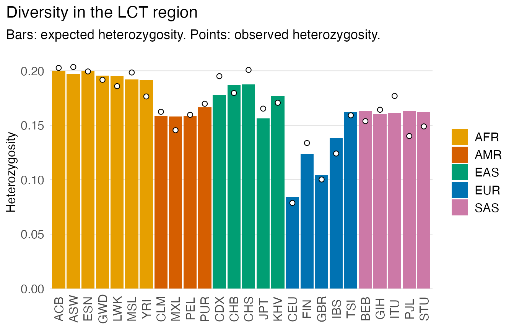
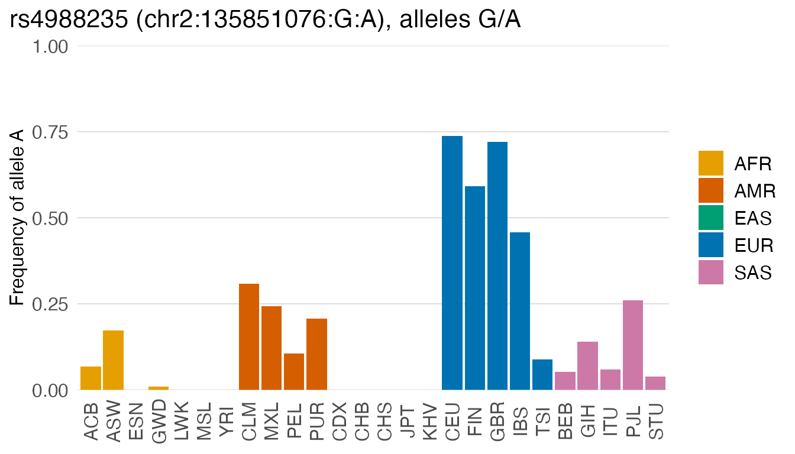
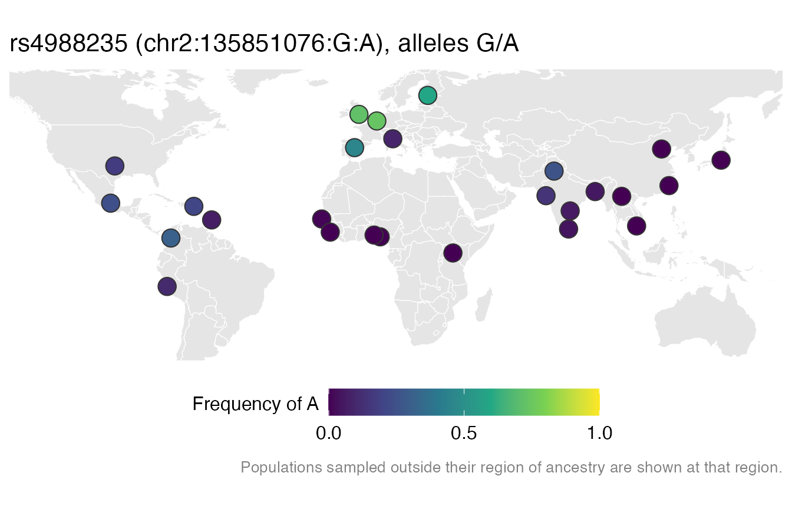
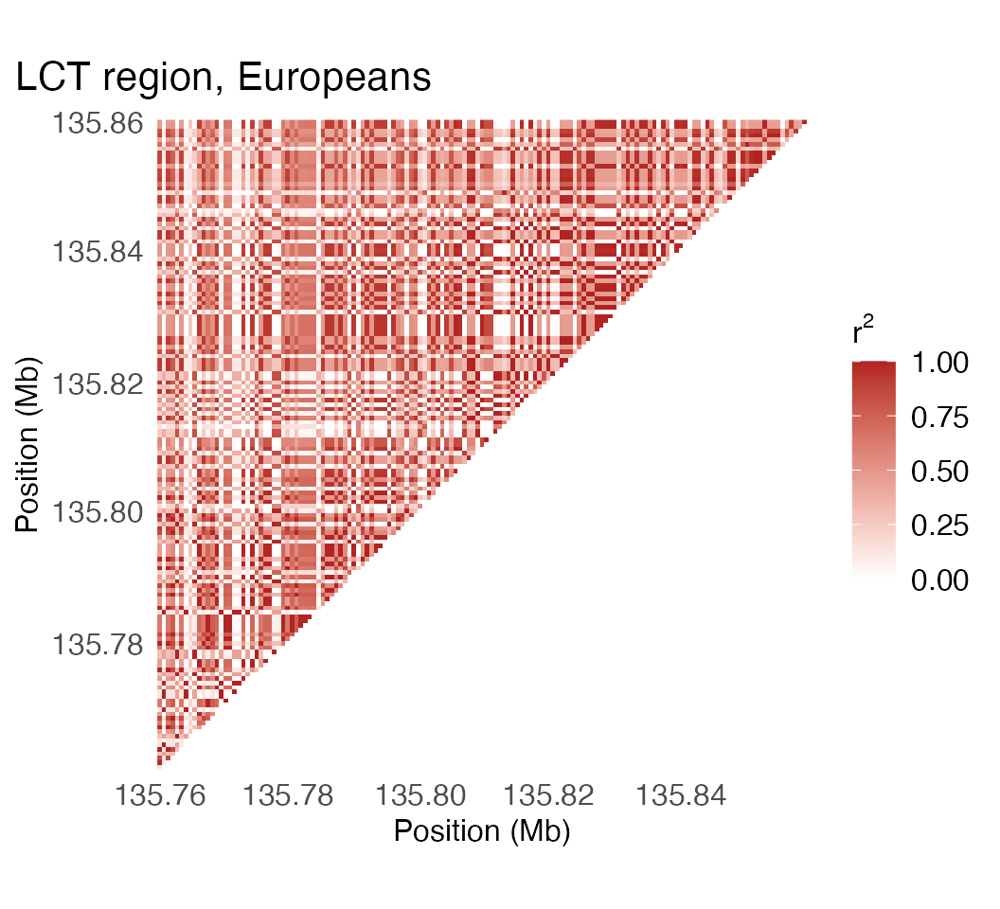
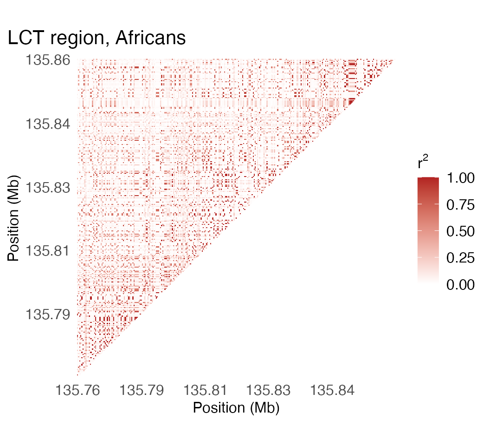
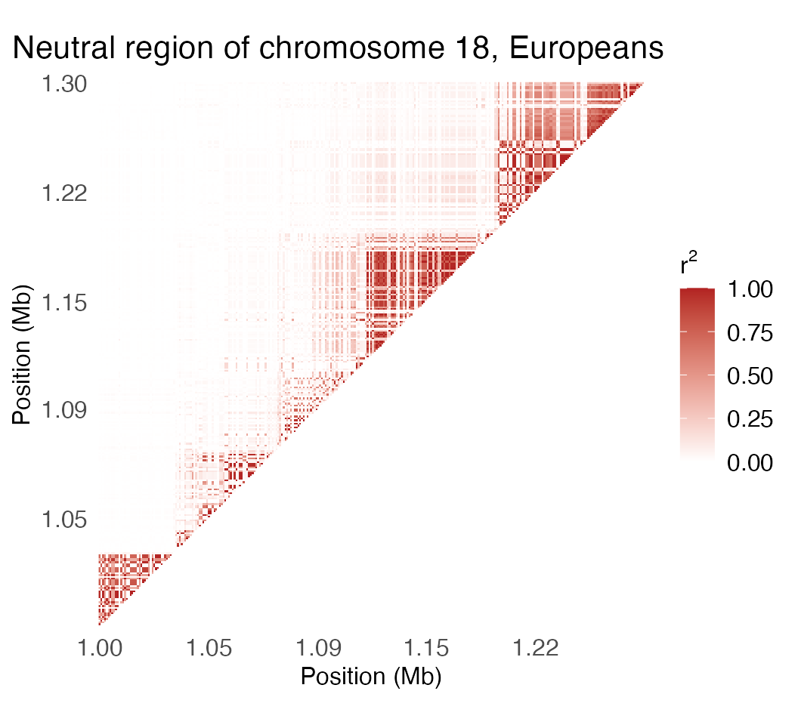

Diversity and selection: heterozygosity, allele frequencies and LD
Source:vignettes/diversity-and-selection.Rmd
diversity-and-selection.RmdTwo forces shape the genetic variation we see in human populations.
Population history (migrations, bottlenecks, growth and
mixing) affects the whole genome. Natural selection
affects particular genes, where a variant that helped people survive or
reproduce in a particular environment rose in frequency. This vignette
shows how to see both, by comparing a region with no gene under strong
selection (example_neutral, on chromosome 18) with the
lactase gene (example_lct).
Genetic diversity
Heterozygosity
A person is heterozygous at a SNP if they carry two
different alleles. The more genetic diversity a population has, the more
heterozygous people it has. calc_heterozygosity() measures
this in two ways: the observed proportion of heterozygous genotypes, and
the proportion expected from the population’s allele frequencies (see
?calc_heterozygosity).
neutral <- filter_snps(example_neutral, min_maf = 0.01)
het <- calc_heterozygosity(neutral)
het[order(-het$expected), ]
#> # A tibble: 26 × 6
#> pop super_pop people snps observed expected
#> <chr> <chr> <int> <int> <dbl> <dbl>
#> 1 MSL AFR 85 1409 0.223 0.228
#> 2 YRI AFR 108 1409 0.224 0.220
#> 3 ESN AFR 99 1409 0.211 0.217
#> 4 ACB AFR 96 1409 0.215 0.213
#> 5 GWD AFR 113 1409 0.210 0.213
#> 6 LWK AFR 99 1409 0.209 0.210
#> 7 ASW AFR 61 1409 0.204 0.207
#> 8 STU SAS 102 1409 0.152 0.162
#> 9 ITU SAS 102 1409 0.156 0.159
#> 10 BEB SAS 86 1409 0.154 0.156
#> # ℹ 16 more rows
plot_heterozygosity(het, title = "Diversity in a neutral region of chromosome 18")
African populations have the highest diversity. This is one of the most consistent findings in human genetics, and is explained by the serial founder effect: modern humans originated in Africa, and each time a small group moved on to settle a new region, it carried only part of the diversity of the group it came from. Diversity therefore tends to decrease with distance from Africa.
Selection reduces diversity
Now compare the lactase gene:
lct_het <- calc_heterozygosity(filter_snps(example_lct, min_maf = 0.01))
lct_het[order(-lct_het$expected), ]
#> # A tibble: 26 × 6
#> pop super_pop people snps observed expected
#> <chr> <chr> <int> <int> <dbl> <dbl>
#> 1 ACB AFR 96 417 0.203 0.200
#> 2 ESN AFR 99 417 0.199 0.200
#> 3 ASW AFR 61 417 0.203 0.197
#> 4 GWD AFR 113 417 0.192 0.196
#> 5 LWK AFR 99 417 0.186 0.195
#> 6 MSL AFR 85 417 0.198 0.192
#> 7 YRI AFR 108 417 0.176 0.192
#> 8 CHS EAS 105 417 0.201 0.187
#> 9 CHB EAS 103 417 0.180 0.187
#> 10 CDX EAS 93 417 0.195 0.178
#> # ℹ 16 more rows
plot_heterozygosity(lct_het, title = "Diversity in the LCT region")
In the LCT region, European populations, especially CEU and GBR, have much lower diversity than in the neutral region, and the lowest of all 26 populations. When the lactase persistence variant spread through Northern Europe, the stretch of chromosome around it spread too, replacing other versions of the region. Variation near a strongly selected variant is “swept away”, so low local diversity in one population is one of the signatures geneticists use to find genes under selection.
A small region holds few independent pieces of evidence, so it is also affected by chance and by the particular history of that stretch of DNA. This is why conclusions about population history are based on many regions across the genome, while unusual single regions point to selection.
Allele frequencies
One SNP, many populations
calc_allele_freqs() calculates the frequency of every
SNP’s alternative allele in each population. plot_freqs()
and map_freqs() show one SNP.
lct_freqs <- calc_allele_freqs(example_lct)
plot_freqs(lct_freqs, snp = "rs4988235")
map_freqs(lct_freqs, snp = "rs4988235")
rs4988235 is the main lactase persistence variant in Europeans. Most mammals stop producing lactase, the enzyme that digests milk sugar, after weaning. People who carry this variant keep producing it as adults. The variant lies about 14 kb upstream of the LCT gene, inside the neighbouring MCM6 gene, where it acts as an enhancer: a switch that controls LCT activity. It is common in Northern Europe and rare in East Asia. Lactase persistence evolved independently in parts of Africa and the Middle East, through different variants that are rare in the 1000 Genomes populations.
On the map, some populations are drawn at their region of ancestral
origin, not where they were sampled. See
?pop_locations.
Other genes to try
The teaching_genes table lists genes with striking
patterns, and teaching_snps their key variants:
teaching_snps[, c("gene", "rsid", "note")]
#> # A tibble: 9 × 3
#> gene rsid note
#> <chr> <chr> <chr>
#> 1 LCT rs4988235 European lactase persistence variant, known as -13910 C>T (…
#> 2 MC1R rs1805007 R151C, red hair variant
#> 3 MC1R rs1805008 R160W, red hair variant
#> 4 SLC24A5 rs1426654 Ala111Thr, light skin pigmentation
#> 5 EDAR rs3827760 Val370Ala, hair thickness
#> 6 ALDH2 rs671 Glu504Lys (ALDH2*2), alcohol flush
#> 7 ACKR1 rs2814778 Duffy-null promoter variant
#> 8 HBB rs334 Glu6Val, sickle cell (HbS)
#> 9 CYP1A2 rs762551 CYP1A2*1F, caffeine metabolismFor example:
fetch_region("SLC24A5") |>
calc_allele_freqs() |>
map_freqs(snp = "rs1426654")
fetch_region("ACKR1") |>
calc_allele_freqs() |>
map_freqs(snp = "rs2814778")Finding the most differentiated SNPs
For a region without a known key variant, you can look for the SNPs whose frequencies differ most between populations, using dplyr:
calc_allele_freqs(neutral, by = "super_pop") |>
dplyr::group_by(id) |>
dplyr::summarise(difference = max(alt_freq) - min(alt_freq)) |>
dplyr::arrange(dplyr::desc(difference)) |>
head()
#> # A tibble: 6 × 2
#> id difference
#> <chr> <dbl>
#> 1 chr18:1080761:A:G 0.635
#> 2 chr18:1203096:T:C 0.629
#> 3 chr18:1028296:T:C 0.617
#> 4 chr18:1035816:A:C 0.616
#> 5 chr18:1036594:C:T 0.616
#> 6 chr18:1015611:G:A 0.613Linkage disequilibrium
What LD is
Chromosomes are passed down in long pieces, broken up only occasionally by recombination. SNPs close together therefore tend to be inherited together: knowing someone’s allele at one SNP tells you something about their allele at a nearby SNP. This is linkage disequilibrium (LD), measured here as r², from 0 (no association) to 1 (complete association).
calc_ld() calculates r² between pairs of SNPs, and
plot_ld() draws a heatmap. Rare SNPs give unreliable r²
values, so we keep SNPs with a minor allele frequency of at least 5%
within the population we look at, and we do not prune for LD (that would
remove exactly the pattern we want to see).
LD reveals selection
When a favourable variant spreads quickly through a population, it carries the surrounding stretch of DNA with it, before recombination has had time to break it up. This selective sweep leaves an unusually long block of high LD around the selected variant. Compare LD around LCT in Europeans, where lactase persistence spread rapidly over the last few thousand years, with LD in Africans:
example_lct |>
keep_pops(super_pop = "EUR") |>
filter_snps(min_maf = 0.05) |>
calc_ld() |>
plot_ld(title = "LCT region, Europeans")
example_lct |>
keep_pops(super_pop = "AFR") |>
filter_snps(min_maf = 0.05) |>
calc_ld() |>
plot_ld(title = "LCT region, Africans")
#> Using 300 evenly spaced SNPs out of 313 (see `max_snps`).
In Europeans, much of the region forms one large block of high LD (an average r² of about 0.45 across all pairs of SNPs). In Africans, LD is broken up into small patches (average r² about 0.1). Part of this difference is general: African populations have older and larger populations behind them, and so shorter LD everywhere in the genome. But comparing with the neutral region, where the average r² in Europeans is below 0.1, shows how unusual the LCT region is in Europeans:
example_neutral |>
keep_pops(super_pop = "EUR") |>
filter_snps(min_maf = 0.05) |>
calc_ld() |>
plot_ld(title = "Neutral region of chromosome 18, Europeans")
#> Using 300 evenly spaced SNPs out of 547 (see `max_snps`).